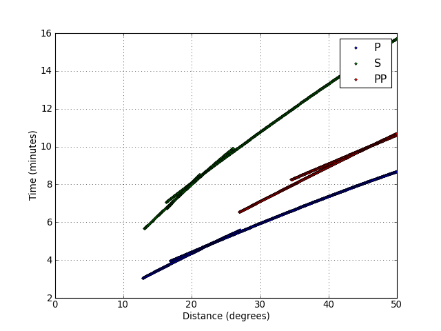

Basic travel time plotting function.
| Parameters: |
|
|---|---|
| Returns: | None |
Example
>>> from obspy.taup.taup import travelTimePlot
>>> travelTimePlot(min_degree=0, max_degree=50, phases=['P', 'S', 'PP'],
... depth=120, model='iasp91')
